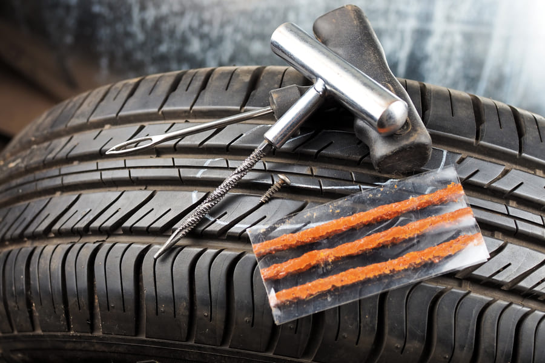
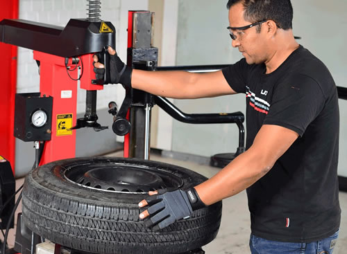
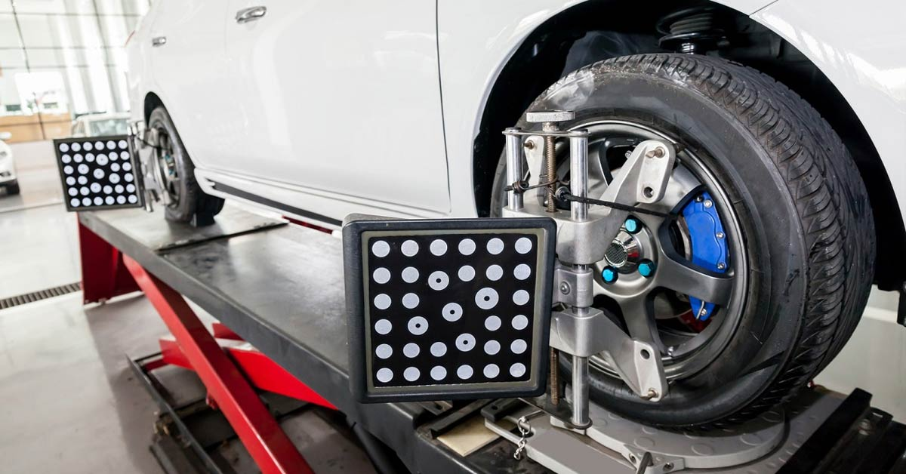
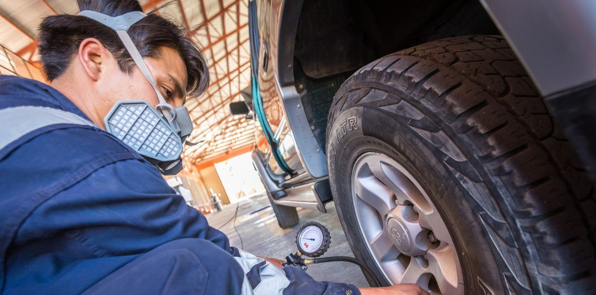
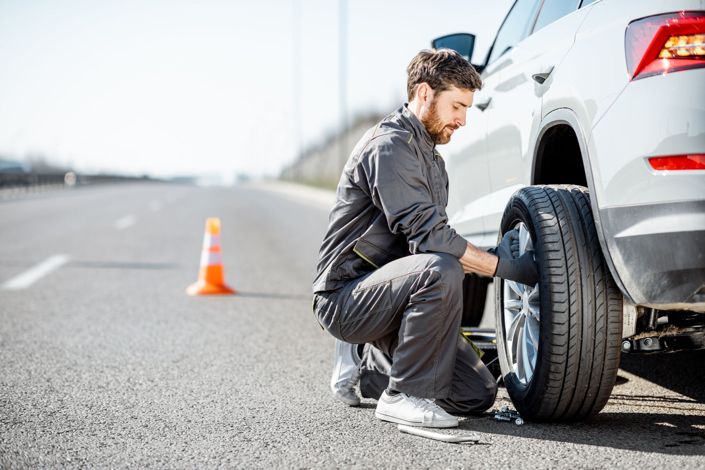

Reparación y Mantenimiento de Neumáticos
Realizamos todo tipo de reparaciones en tus neumáticos, desde parches hasta cambios completos, asegurándonos de que siempre estés seguro en la carretera.
Balanceo de Ruedas
El balanceo de ruedas es crucial para la estabilidad de tu vehículo. Ofrecemos un servicio preciso y rápido para asegurar una conducción suave y segura.
Alineación de Dirección
Una correcta alineación de dirección mejora la maniobrabilidad y la seguridad. Nuestro equipo utiliza tecnología avanzada para garantizar que tu vehículo esté perfectamente alineado.
Inspección y Mantenimiento General
Nuestros técnicos realizan inspecciones completas y mantenimiento general para asegurarse de que tu vehículo funcione de manera óptima en todo momento.
Servicio de Emergencia
Ofrecemos servicio de emergencia 24/7 para ayudarte en caso de pinchazos o cualquier otro problema con tus neumáticos.
¿Necesitas un servicio especializado?
Contacta con nosotros y descubre cómo podemos ayudarte. Nuestro equipo está disponible para responder a todas tus preguntas y ofrecerte las mejores soluciones.
Contáctanos